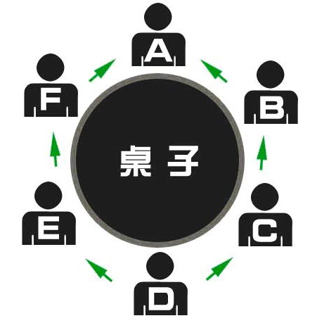

游戏牌的左上角的一个数字或字母，从A到K。数字2代表2点、3代表3点……依此类推。字母A、J、Q、K分别代表1、11、12和13点。A是最小的点数，K是最大的点数。
◆一张牌的点数若大于K则视为K，若小于A则视为A。
例如：发动【丈八蛇矛】将一张点数为7的牌和一张点数为9的牌当【杀】使用，此【杀】的点数为13。
武将牌上方的阴阳鱼个数，即体力的最大值。若游戏人数不小于5，主公的体力上限+1。
◆角色减体力上限后，若其体力值超过体力上限，其须将体力调整至等同于体力上限。
◆体力上限较多的武将可以用数张3/4阴阳鱼体力牌或1/2阴阳鱼体力牌来表示。
例如：主公董卓用两张4阴阳鱼体力牌和一张1阴阳鱼体力牌表示初始体力上限；当他减体力上限时，通过将一张合适的体力牌翻面或移走的方式来调整。
游戏开始时，每名角色均拥有等同于体力上限的体力，在游戏过程中此数值有可能发生变化（回复或扣减），通常是在游戏中用于计算时被提到。
◆角色的体力有可能小于0。
例如：体力为1的庞统-甘夫人在判定阶段受到【闪电】造成的3点伤害，进入濒死状态，进行濒死结算，轮到其进行响应时其发动【涅槃】，当其将体力值回复至3点时，其至多可以发动五次【淑慎】。
角色的体力牌上未被武将牌挡住的阴阳鱼个数，通常是作为游戏中所调用的一个参数被提到。
◆当角色的体力降到0或更低时，由于体力牌上的阴阳鱼全部被挡住，其体力值为0。
角色的手牌上限为其体力值。手牌上限通常只于角色的弃牌阶段提及，角色能保留的手牌数不能超过其手牌上限。
◆手牌上限经过修正后最小值为0。
例如：臧霸受到2点伤害后，对体力值为1的来源连续发动两次【横江】，此时来源的手牌上限-2，为0。
此数值由角色的体力上限减去体力值得到。
牌或技能描述中，“造成/受到X点伤害”的X即此伤害的伤害值基数。
例如：装备【古锭刀】的角色使用【酒】后对只有一张手牌的于吉（旧风）使用【杀】，于吉（旧风）用方块【闪】发动【蛊惑】使用【闪】进行响应，该角色质疑失败后死亡，其装备区里的【古锭刀】被弃置，因此继续进行【杀】的使用结算，于吉（旧风）受到2点伤害。

角色间的距离可以从图示中看出：无论顺时针或是逆时针，两名角色间相对的最短路径（计算绿色小箭头数）即为两名角色间的距离值。例如：如图，游戏开始时：D与C/E的距离为1，D与B/F的距离为2，D与A的距离为3。
◆一名角色死亡则不再参与距离的计算，即其左右两边的角色就“挨近”了。
例如：装备【三尖两刃刀】的角色杀死一名角色，在造成伤害后不可以发动【三尖两刃刀】。
◆“A与B的距离”和“B与A的距离”会因为受到不同坐骑牌的技能/武将技能的影响而不同。
例如：如图，当D装备【+1坐骑】时，C/E与D的距离为变2，B/F与D的距离变为3，A与D的距离变为4，而D与其他角色的距离不变；当D装备【-1坐骑】时，D与B/F的距离变为1，D与A的距离变为2，而其他角色与D的距离不变。
◆一名角色与其他角色间，最短距离为1。自己与自己的距离永远是0。
例如：如图，当D装备【-1坐骑】时，D与C/E的距离为1。
装备区里没有武器牌的角色的攻击范围为1；装备区里有武器牌的角色的攻击范围等同于此武将牌上标识的攻击范围。
例如：一名装备【青釭剑】的角色的攻击范围为2，若其受到【吴六剑】的影响，则其攻击范围为3。
◆若A的攻击范围不小于A与B的距离，称为B在A的攻击范围内或A的攻击范围内含有B。A的攻击范围无限，即所有其他角色都在A的攻击范围内。
X是一个自然数变量，数值会因条件的不同而改变。
◆X可以为0。
例如：鲁肃可以不执行任何消耗，对都没有手牌的两名其他角色发动【缔盟】。
例如：诸葛恪可以不执行任何消耗，对体力值为0的周泰（旧风）发动【黩武】。
为此参数赋值。“为”表示此数值可以被修正，“视为”表示此参数无论经过怎样的修正最终都是被赋值为此数值。
例如：袁术发动【妄尊】令有“创”的周泰的手牌上限-1，此回合内周泰的手牌上限为“创”数-1。
例如：A与B的距离视为1即无论A与B的距离本来是多少（或有经过坐骑牌的修正），最终都视为是1。
两个数值相减得到的数值的绝对值。
这些数值在计算时都不考虑已经死亡的角色。
允许有多名角色的该数值并列最大/小，即这些角色中的每一名都是该数值最大/小的。
允许有多名角色的该事物并列最多/少，即这些角色中的每一名都是该事物最多/少的。
◆若所有角色都没有该事物，则不存在该事物最多的角色。
游戏开始时参与本局游戏的玩家数量。
一个数值若为奇数，则它的一半默认向下取整。